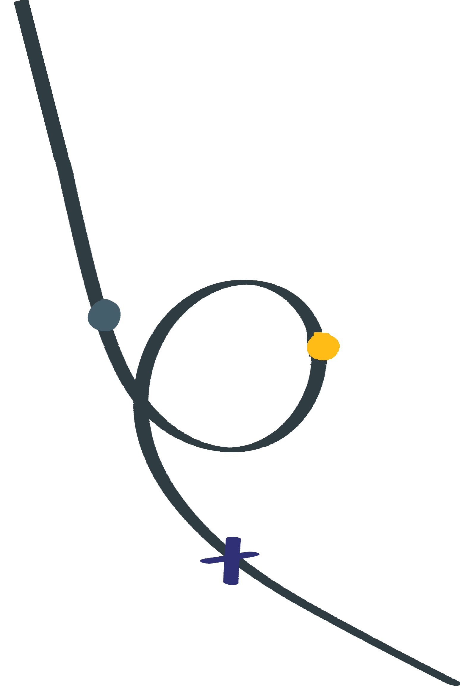

ASUS, Singapore
UI/UX Designer
June 2020 — Oct 2022
Information Technology (IT)
I design software for screens that don’t behave like one screen. At ASUS that’s multi-screen laptops; before that, at M1, it was a telco with many touchpoints and no shared language between them.
Most of my work ends up being systems rather than screens — I like the part where a messy set of exceptions turns out to have a rule underneath it. I run my own research, and design to WCAG and EAA because accessible is just a word for works.

ASUS, Singapore
UI/UX Designer
June 2020 — Oct 2022
Information Technology (IT)
M1, Singapore
CX/UX Designer
Nov 2022 — July 2024
Telecommunication
ASUS, Singapore
Senior UI/UX Designer
July 2024 — Present
Information Technology (IT)
Tools
Figma, Sketch, Adobe Creative Suite, Zeplin, Miro, LucidChart, Confluence, JIRA, Microsoft Suite, Design System, Figma Make, Claude
Methodologies
Design Thinking, Deep User Interview, Workshop Design & Facilitation, Quantitative Survey, A/B Testing, Usability Testing, User Journey Mapping, Storyboarding, Persona Building, Low/High-Fi Prototype, Information Architect Mapping, Wireframe Design, Human-Computer Interaction (HCI), WCAG Accessibility Design
Soft Skills
Leadership, Agile & Waterfall Method of Working, Entrepreneurial Mindset, Design Strategy Planning